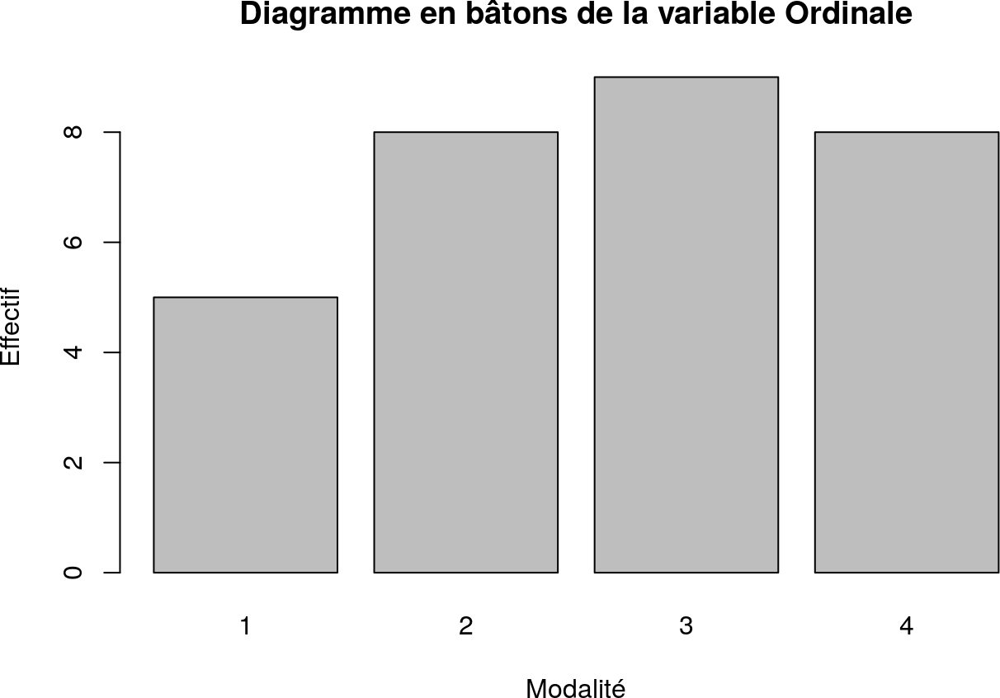
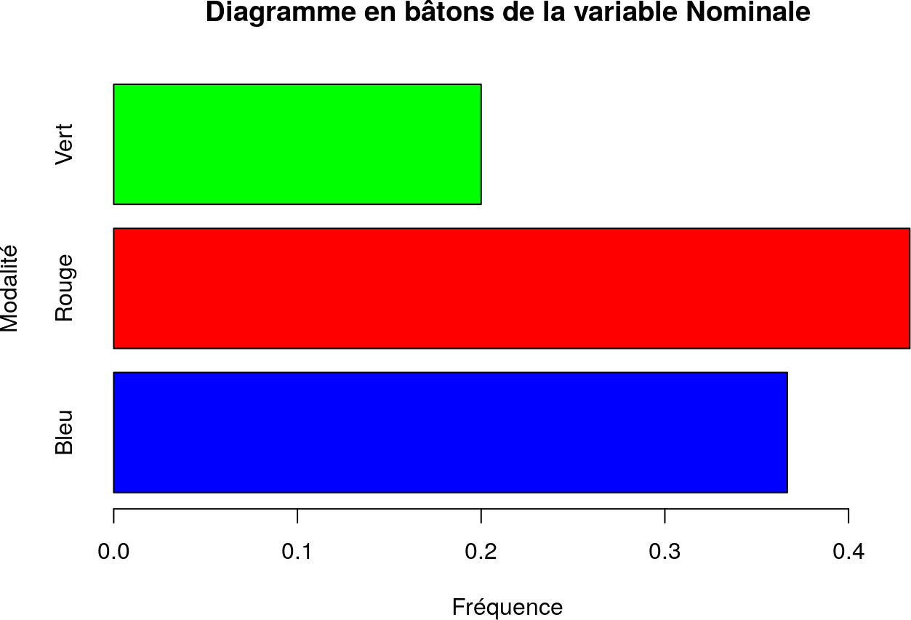
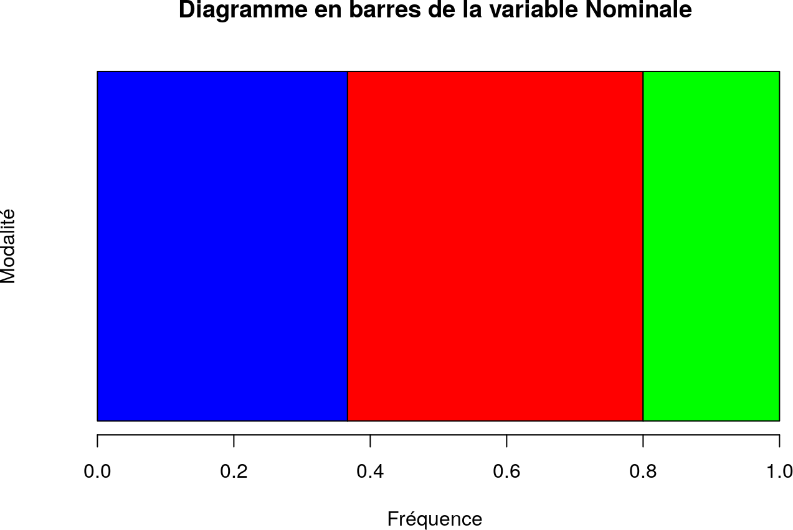
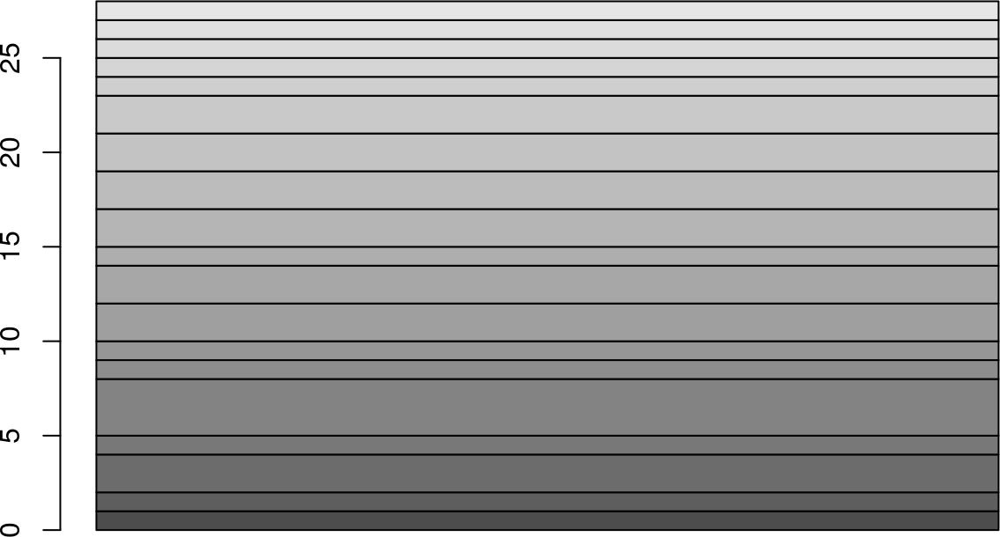
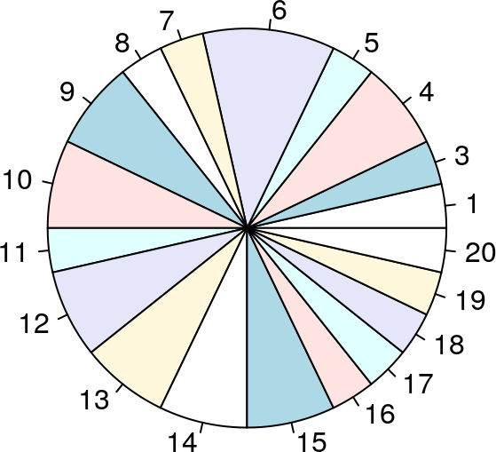

6 Analyse qualitative univariée
Dans ce chapitre, on considère :
- un corpus de données de \(N\) individus ;
- une variable qualitative \(X\) sur ce corpus de données.
Pour tout entier \(i\) entre \(1\) et \(N\), on note \(x_i\) la valeur de la variable \(X\) pour le \(i\)-ème individu.
On reprend l’exemple donné au début du document ;
str(data)
'data.frame': 30 obs. of 6 variables:
$ Continue : num -1.59 -4.12 1.81 0.12 8 -4.56 -6.01 -5.77 -2.79 9.23 ...
$ Discrète : int 13 9 NA 10 6 7 8 6 4 NA ...
$ Ordinale : Ord.factor w/ 4 levels "1"<"2"<"3"<"4": 4 1 4 1 3 4 3 1 3 3 ...
$ Nominale : Factor w/ 3 levels "Bleu","Rouge",..: 1 2 3 1 1 2 2 1 2 1 ...
$ Dichotomique: Factor w/ 2 levels "Non","Oui": 2 1 1 2 2 1 1 2 2 1 ...
$ Intervalles : Ord.factor w/ 4 levels "Très bas"<"Bas"<..: 2 2 3 3 4 2 1 1 2 4 ...
data
Continue Discrète Ordinale Nominale Dichotomique Intervalles
1 -1.59 13 4 Bleu Oui Bas
2 -4.12 9 1 Rouge Non Bas
3 1.81 NA 4 Vert Non Haut
4 0.12 10 1 Bleu Oui Haut
5 8.00 6 3 Bleu Oui Très haut
6 -4.56 7 4 Rouge Non Bas
7 -6.01 8 3 Rouge Non Très bas
8 -5.77 6 1 Bleu Oui Très bas
9 -2.79 4 3 Rouge Oui Bas
10 9.23 NA 3 Bleu Non Très haut
11 -1.84 18 3 Rouge Non Bas
12 -5.70 19 3 Bleu Oui Très bas
13 2.87 14 4 Rouge Oui Haut
14 7.01 17 1 Rouge <NA> Très haut
15 -3.58 5 2 Vert Oui Bas
16 6.74 15 2 Bleu Oui Très haut
17 7.22 3 4 Rouge <NA> Très haut
18 -5.91 1 2 Vert Oui Très bas
19 -7.20 15 4 Bleu Oui Très bas
20 8.18 12 3 Rouge Non Très haut
21 9.61 4 2 Vert Oui Très haut
22 -3.55 10 3 Bleu Oui Bas
23 -3.49 13 4 Bleu Non Bas
24 -4.06 6 2 Bleu Non Bas
25 3.55 12 4 Vert Non Haut
26 1.23 14 2 Rouge Non Haut
27 -7.61 11 2 Rouge Non Très bas
28 5.86 16 2 Rouge Non Très haut
29 -3.81 9 3 Vert Oui Bas
30 5.72 20 1 Rouge Oui Très haut6.1 Terminologie
En R : Calculer l’ensemble des modalités d’une variable qualitative
On utilise la fonction
levels:
6.1.1 Effectifs. Fréquences
Définition 6.2 Soit \(x\) une modalité de \(X\).
L’effectif de \(x\) est le nombre d’individus dont la valeur de \(X\) est \(x\), c’est-à-dire \[\operatorname{card}\{i \in \{1, \ldots, N\},\: x_i = x\}\]En R : Calculer les effectifs d’une variable qualitative
On peut utiliser la fonction
table:On peut alors récupérer l’effectif d’une modalité à partir du résultat :
L’option
useNAspécifie comment traiter les valeurs manquantesNA:
none tient pas compte des valeurs manquantes dans le calcul ;ifanytient compte des valeurs manquantes dans le calcul, s’il y en a ;alwaystient compte des valeurs manquantes dans le calcul même s’il n’y en a pas.
Définition 6.3 Soit \(x\) une modalité de \(X\).
La fréquence de \(x\) est la proportion d’individus dont la valeur de \(X\) est \(x\), c’est-à-dire \[\dfrac{\operatorname{card}\{i \in \{1, \ldots, N\},\: x_i = x\}}{N}\]En R : Calculer les fréquences d’une variable qualitative
On peut appliquer la fonction
prop.tableau résultat detable:On peut alors récupérer la fréquence d’une modalité à partir du résultat :
6.1.2 Représentations graphiques
6.1.2.1 Diagramme en bâtons
Pour chaque modalité, on trace un bâton dont la hauteur est proportionnelle à son effectif. Les modalités sont placés dans l’ordre induit par la variable.
En R : Calculer le diagramme à batons d’une variable qualitative
On utilise la fonction
barplot:
horizspécifie si les barres sont tracées horizontalement (ce qui n’est pas le cas par défaut) ;maindéfinit le titre du graphique ;xlabdéfinit la légende en abscisse ;ylabdéfinit la légende en ordonnée ;coldéfinit les couleurs utilisées pour chaque secteur (et donc chaque modalité).barplot(table(data$Ordinale), main = "Diagramme en bâtons de la variable Ordinale", xlab = "Modalité", ylab = "Effectif")
barplot(prop.table(table(data$Nominale)), horiz = TRUE, main = "Diagramme en bâtons de la variable Nominale", ylab = "Modalité", xlab = "Fréquence", col = c("blue", "red", "green"))

6.1.2.2 Diagramme en barres
Chaque modalité est représentée dans un rectangle dont :
- l’une des dimensions est fixe ;
- l’autre dimension est proportionnelle à sa fréquence.
En R : Tracer le diagramme en barres d’une variable qualitative.
On utilise la fonction
barploten effectuant une conversion de la table des effectifs avecas.matrix:barplot(as.matrix(table(data$Ordinale)), main = "Diagramme en barres de la variable Ordinale", xlab = "Modalité", ylab = "Effectif", legend.text = TRUE)
barplot(as.matrix(prop.table(table(data$Nominale))), horiz = TRUE, main = "Diagramme en barres de la variable Nominale", ylab = "Modalité", xlab = "Fréquence", col = c("blue", "red", "green"))


6.1.2.3 Diagramme en secteurs
Chaque modalité est représentée dans un secteur de disque proportionnel à sa fréquence.
En R : Tracer le diagramme en secteurs d’une variable qualitative.
On utilise la fonction
pie:
maindéfinit le titre du graphique ;xlabdéfinit la légende en abscisse ;ylabdéfinit la légende en ordonnée ;- ‘col’ définit les couleurs utilisées pour chaque secteur (et donc chaque modalité).
pie(prop.table(table(data$Nominale)), main = "Diagramme en secteurs de la variable Nominale", col = c("blue", "red", "green"))


 ```
6.2 Indicateurs
6.2.1 Mode
En R : Calculer le mode d’une variable qualitative
La fonction n’existe pas par défaut en R. Comme la fonction
modeest déjà définie en R, nous allons créer la fonctionmodal.factor:modal.factor <- function(x, na.rm = FALSE) { if(na.rm) { x = x[!is.na(x)] } levels(x)[which.max(table(x))] }L’option
na.rmspécifie si les valeurs manquantes doivent être retirées avant le calcul du mode (par défaut, ce n’est pas le cas).
6.2.2 Moyenne des variables dichotomiques binaires
Proposition 6.1 Soit \(X\) une variable qualitative dont les seules modalités sont \(0\) et \(1\).
Alors \(\overline{X} = \dfrac{1}{N}\displaystyle\sum_{i = 1}^N x_i\) est égale à la fréquence de la modalité \(1\).